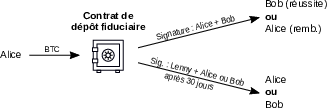
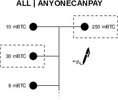
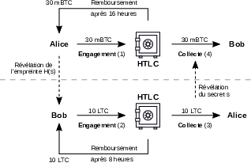
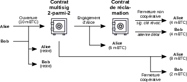
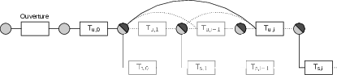
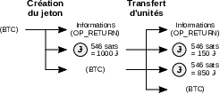
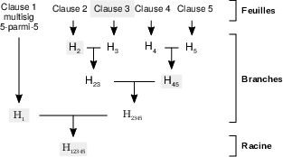

13 Les contrats autonomes
Un contrat autonome, de l’anglais smart contract, est un programme informatique dont l’exécution ne nécessite pas l’intervention d’un tiers de confiance. On parle aussi de contrat auto-exécutable ou de contrat intelligent (traduction littérale). Chaque contrat est constitué de clauses qui sont des conditions de dépense spécifiques.
Bitcoin constitue la première implémentation concrète d’un système hébergeant des contrats autonomes, par le biais de son système de programmation interne qui met en œuvre des scripts au sein des transactions. Il permet d’exécuter une variété de contrats allant du compte multisignatures au canal de paiement, en passant par le dépôt fiduciaire. L’ouverture apportée par cette possibilité facilite l’inscription de données arbitraires sur la chaîne, un cas d’utilisation strictement non monétaire du protocole.
Les contrats simples
La notion de contrat autonome1 a germé au sein du mouvement cypherpunk dans les années 1990. Elle a été exposée par Nick Szabo en 1994, qui la définissait comme suit :
1 L’appellation « contrat autonome » visant à traduire smart contract a été proposée par Jacques Favier, Adli Takkal-Bataille et Benoît Huguet dans Bitcoin : Métamorphoses (pp. 105–107) en 2018.
2 Nick Szabo, Smart Contracts, 1994, archive : https://web.archive.org/web/20011102030833/http://szabo.best.vwh.net:80/smart.contracts.html.
« Un contrat autonome est un protocole de transaction informatisé qui exécute les termes d’un contrat. Les objectifs généraux de la conception de contrats autonomes sont de satisfaire les conditions contractuelles courantes (telles que les conditions de paiement, les privilèges, la confidentialité et même l’exécution), de limiter au mieux les interruptions tant malveillantes qu’accidentelles, et de minimiser le besoin de recourir à des intermédiaires de confiance2. »
Le transfert de valeur constitue le cas le plus simple de contrat autonome, ne contenant qu’une seule clause : la fourniture d’une signature numérique correspondant à une clé publique donnée. Mais une multitude d’autres contrats peuvent être implémentés sur Bitcoin, à tel point qu’il est impossible d’en dresser une liste exhaustive. Nous nous contenterons ici d’en décrire quelques exemples pour expliquer comment ils peuvent être mis en place. Voyons d’abord les cas spécifiques du compte multisignatures, du dépôt fiduciaire, du financement participatif et de l’échange atomique.
Le compte multisignatures
Le compte multisignatures est un compte partagé entre plusieurs entités. Il se base sur le schéma de signature multipartite décrit dans le chapitre 12, dans lequel la dépense des fonds demande M signatures parmi N participants (ce qu’on appelle « M-parmi-N » ou « M-of-N » en anglais). Par exemple, la dépense depuis un compte 2-parmi-3 exige que 2 personnes parmi 3 participants prédéterminés produisent une signature valide, peu importe l’identité précise de ces personnes.
Ce type de contrat est utile pour avoir un compte joint entre époux (2 parmi 2), pour faciliter la détention par une entreprise (3 associés parmi 7 par exemple) ou pour améliorer la conservation de bitcoins en général. Les plateformes d’échange utilisent notamment ce type de contrat pour conserver leurs avoirs. En novembre 2023, la deuxième adresse la plus riche du monde en 2023 était ainsi l’adresse multisignatures 3-parmi-5 de Bitfinex contenant plus de 178 000 BTC3.
3 L’adresse multisignatures 3-parmi-5 de Bitfinex est bc1qgdjqv0av3q56jvd82tkdjpy7gdp9ut8tlqmgrpmv24sq90ecnvqqjwvw97.
Le dépôt fiduciaire
Le dépôt fiduciaire, appelé escrow en anglais, est une méthode basée sur le recours à un tiers de confiance, comme un notaire, pour sécuriser une transaction entre deux parties qui se méfient l’une de l’autre. L’utilisation de la programmabilité de Bitcoin permet de diminuer le pouvoir du tiers en incluant une limite dans la clause qui le concerne. Ce type de contrat repose sur deux briques techniques de base : la signature multipartite et les verrous temporels.
Prenons l’exemple de deux personnes qui ne se connaissent pas, Alice et Bob, et qui veulent réaliser une transaction en ligne : Alice est l’acheteuse, Bob le vendeur. Les deux parties font appel à un intermédiaire de confiance, Lenny, avec qui elles créent le contrat de dépôt fiduciaire. Alice y envoie les fonds et attend de recevoir le bien. Deux clauses peuvent alors être activées :
Le règlement à l’amiable : le contrat est déverrouillé par les signatures des deux parties, qui peuvent choisir d’envoyer les fonds vers Bob (réussite de l’échange) ou bien de rembourser Alice (échec de l’échange) ;
Le litige : après une période prédéterminée (par exemple 30 jours), le contrat est déverrouillé par la signature de Lenny et celle de l’une des deux parties ; dans ce cas, Lenny se charge de déterminer qui est la partie honnête et de lui envoyer les fonds.

Ce fonctionnement, décrit sur la figure 13.1, incite d’une part les deux parties à coopérer pour ne pas perdre de temps, et empêche d’autre part la collusion de la tierce partie (Lenny) avec l’une des deux autres avant le délai prévu (30 jours ici). Le recours à la confiance est ainsi minimisé autant que possible.
Ce type de contrat était soutenu par Satoshi Nakamoto dans le livre blanc4. En effet, l’irréversibilité des transferts dans Bitcoin offrait peu de garantie pour les commerçants, et le dépôt fiduciaire permettait d’atténuer le problème. C’est typiquement ce genre de mécanisme qui intervient aujourd’hui dans les plateformes de change de pair à pair comme Bisq ou Hodl Hodl, même si l’implémentation diffère de ce qui est présenté ici.
4 « Les acheteurs pourraient être facilement protégés par la mise en œuvre de mécanismes de dépôt fiduciaire routiniers. » – Satoshi Nakamoto, Bitcoin: A Peer-to-Peer Electronic Cash System, 31 octobre 2008.
Le financement participatif
Le financement participatif consiste à faire appel au grand public pour contribuer au soutien d’un projet, par opposition au financement par prêt bancaire ou par levée de fonds auprès des professionnels du capital-risque. Il s’agit le plus souvent d’un accord informel entre le promoteur du projet et le public ayant pour but de soutenir la création d’un bien commun, qui profite à tous. Dans Bitcoin, il est possible d’exécuter cet accord par le biais de promesses de paiement résiliables qui ne sont pas soumises à l’arbitraire d’un tiers de confiance.
D’un point de vue technique, il s’agit de créer une transaction dite anyone-can-pay (« tout le monde peut payer ») où la signature de chaque contributeur ne prend en compte que la sortie transactionnelle de la levée de fonds et l’entrée du contributeur en question, donnant la possibilité d’ajouter des entrées (voir figure 13.2). La transaction résultante n’est valide que si le montant en entrée atteint le montant indiqué en sortie, de sorte que les contributeurs conservent le contrôle de leurs fonds jusqu’à la réalisation du paiement total et peuvent se retirer à tout moment.

Dans le monde du logiciel libre, ce type de financement participatif est particulièrement important, car il n’y a pas de privilège lié à l’écriture du code qui permette de gagner sa vie par la vente de licences. C’est encore plus vrai dans le monde de la cryptomonnaie qui dépend fortement du bon maintien des implémentations logicielles. C’est pourquoi Mike Hearn, qui s’intéressait de près aux capacités de programmation de Bitcoin, s’est vite approprié cette possibilité pour déployer de tels « contrats de garantie » (assurance contracts) permettant de financer les biens publics. Il a mis le concept en œuvre au sein de son application Lighthouse, dont une version fonctionnelle est sortie en 2015, qui avait pour but de faciliter le soutien communautaire des projets de l’écosystème. Avec le déclenchement de la guerre des blocs, ce projet a été mis de côté par Hearn et a fini par être abandonné. Le procédé a été néanmoins repris sur Bitcoin Cash en 2020 par l’intermédiaire de Flipstarter, qui a permis de lever d’importantes sommes pour le financement de l’infrastructure logicielle du protocole.
L’échange atomique
L’échange atomique (atomic swap) est une manière sûre d’échanger deux cryptomonnaies fonctionnant sur des chaînes de blocs différentes, sans passer par un intermédiaire de confiance. L’adjectif « atomique » se rapporte à la nature insécable (en grec ancien ἄtomos, átomos) de l’échange : soit les deux parties transfèrent leur dû, soit il ne se passe rien. Le concept a été décrit par Sergio Lerner et Gregory Maxwell en juillet 2012 sur le forum Bitcointalk5.
5 Sergio Demian Lerner, P2PTradeX: P2P Trading between cryptocurrencies, 05/07/2012 23:49:48 UTC : https://bitcointalk.org/index.php?topic=91843.msg1011737#msg1011737 ; Gregory Maxwell, Re: P2PTradeX: P2P Trading between cryptocurrencies, 06/07/2012 02:17:02 UTC : https://bitcointalk.org/index.php?topic=91843.msg1011956#msg1011956.
6 Pour assurer la bonne exécution du contrat (éviter le remplacement de la transaction durant l’attente de confirmation), des clés publiques sont assignées à chacune de ces conditions de sorte qu’une signature est systématiquement demandée au destinataire des fonds.
L’échange atomique repose sur le concept de contrat verrouillé par une empreinte et par un temps, appelé HTLC par abréviation du terme anglais Hash Time Locked Contract. Celui-ci est un contrat à deux clauses, c’est-à-dire que les fonds peuvent être déverrouillés à deux conditions6 :
L’accord mutuel : la révélation d’un secret qui est haché par une fonction de hachage et comparé à l’empreinte (hash) inscrite dans le contrat ;
Le litige : l’attente d’un certain temps (time) de verrouillage déterminé dans le contrat.
Considérons l’exemple d’un échange atomique entre Alice, qui possède du BTC, et Bob, qui possède du LTC. Alice (maker) propose d’échanger 0,03 BTC pour 10 LTC, à un taux de change de 0,003 LTC par BTC, et Bob (taker) accepte cet échange. Cette négociation peut avoir lieu par le biais d’un carnet d’ordres public ou privé. Alice choisit au hasard un secret (noté \(s\)), qui est un nombre de 32 octets, dont elle fournit l’empreinte cryptographique \(H(s)\) à Bob. Ils peuvent ainsi construire un contrat chacun de leur côté pour effectuer l’échange atomique. Son déroulé est décrit au sein de la figure 13.3.
La première phase est la phase d’engagement. D’abord, Alice construit, signe et diffuse une transaction d’engagement envoyant 0,03 BTC vers le contrat d’échange atomique sur la chaîne de Bitcoin. Elle fournit son contenu et son adresse à Bob pour qu’il en vérifie la validité. Puis, elle construit et signe une transaction de remboursement dépensant les fonds de ce contrat qu’elle pourra diffuser après un délai prédéfini (ici 16 heures). Ensuite, une fois que la transaction d’engagement d’Alice a été confirmée, Bob fait de même de son côté : il crée un contrat équivalent sur la chaîne de Litecoin, où il envoie 10 LTC, et en donne le contenu et l’adresse à Alice pour qu’elle s’assure que tout est en ordre. Enfin, il construit et signe une transaction qui le remboursera au bout d’un délai strictement inférieur à celui de la transaction d’Alice : ici 8 heures. Cette différence résulte du rapport déséquilibré qui existe entre Alice (qui connaît le secret de déverrouillage) et Bob (qui ne le connaît pas).
Lorsque les transactions d’engagement ont toutes deux été confirmées sur leurs chaînes respectives, la seconde phase de l’échange atomique, la phase de collecte, peut commencer. Alice construit, signe et diffuse une transaction de collecte qui lui permet de récupérer les 10 LTC de Bob. Pour cela, elle fournit le secret au sein de la transaction et, ce faisant, le révèle nécessairement à Bob. Finalement, Bob peut lui aussi construire, signer et diffuser une transaction qui lui octroie les 0,03 BTC sur son compte. De cette manière, l’échange est clos !

Ce modèle garantit qu’aucun des deux participants ne peut se rembourser avant la fin du temps de verrouillage de Bob (8 heures) ; qu’Alice ne peut pas faire valoir sa transaction de remboursement au moment de la diffusion de sa transaction de collecte ; et que Bob ne peut pas s’approprier des fonds d’Alice tant qu’elle n’a pas diffusé sa transaction de collecte. Ces garanties rendent le procédé logiquement sécurisé, même si certains évènements perturbateurs peuvent survenir comme une augmentation des temps de confirmation liée à la volatilité du marché des frais.
Le premier atomic swap réel a été réalisé entre Litecoin et Decred le 19 septembre 2017 par Charlie Lee et Alex Yocom-Piatt7. Aujourd’hui, les échanges atomiques sont rares, les carnets d’ordres de plateformes spécialisées comme AtomicDEX étant très peu fournis. Toutefois, avec le durcissement réglementaire sévissant dans l’écosystème et rendant les plateformes centralisées moins fiables, il n’est pas exclu qu’ils jouent un rôle majeur à l’avenir.
7 Les adresses des contrats sur LTC et DCR étaient (respectivement) MLp49daA411aoZ1TmGEdyLuTCE9YA6xhpc et DccPF1yt9cV8vhr97fq3umBx7RqV53MYGDY. L’échange était de 1,337 LTC contre 2,4066 DCR. – Decred-compatible cross-chain atomic swapping, 20 septembre 2017 : https://github.com/decred/atomicswap/blob/master/README.md#first-mainnet-dcr-ltc-atomic-swap.
Les canaux de paiement
Un cas particulier de l’application des contrats autonomes dans Bitcoin est le déploiement de canaux de paiement. Un canal de paiement est une manière pour deux utilisateurs d’effectuer des paiements répétés en bitcoins de manière sûre et instantanée sans publier de transactions sur la chaîne de blocs à partir de liquidités préalablement bloquées. Ces canaux sont notamment à la base du réseau Lightning, construit en surcouche de la chaîne.
Les canaux de paiement de Poon-Dryja
Même si l’idée d’un canal de paiement était envisagée dès les origines, elle ne s’est concrétisée qu’avec le concept élaboré par Joseph Poon et Thaddeus Dryja dans le cadre de leur projet du réseau Lightning8. Il s’agit d’un concept de canal bidirectionnel dont la sécurité repose sur un mécanisme de punition. Les deux participants bloquent des fonds dans un contrat et peuvent procéder à des paiements l’un vers l’autre dans la limite des liquidités disponibles. La somme des deux soldes des participants est appelée la capacité du canal.
8 Joseph Poon et Thaddeus Dryja, The Bitcoin Lightning Network DRAFT Version 0.5, 28 février 2015 : https://lightning.network/lightning-network-paper-DRAFT-0.5.pdf.
Un canal traverse trois phases au cours de son existence :
La phase d’ouverture ou d’installation, lors de laquelle les fonds sont bloqués par les participants sur un contrat autonome de multisignature 2-parmi-2 ;
La phase de négociation ou de mise à jour, durant laquelle la répartition des fonds au sein du canal est ajustée ;
La phase de fermeture ou de règlement, au cours de laquelle les fonds sont distribués aux participants sur la chaîne, généralement de manière coopérative selon le dernier état du canal.
La répartition initiale et la mise à jour du canal se font par l’intermédiaire de transactions d’engagement qui sont échangées entre les participants et qui ne sont pas diffusées sur le réseau, sauf dans le cas d’un litige, c’est-à-dire d’une fermeture non coopérative. Ces transactions d’engagement sont asymétriques, dans le sens où les participants en possèdent chacun leur propre version.
Supposons qu’Alice et Bob possèdent un canal, tel qu’illustré sur la figure 13.4. Dans ce cas, la dernière transaction d’engagement d’Alice, qui peut uniquement être finalisée et diffusée par Bob, prend en compte l’état actualisé du canal et répartit les fonds entre l’adresse d’Alice et un contrat de réclamation. Ce contrat de réclamation contient deux clauses :
La récupération des fonds par Bob au terme d’un temps de verrouillage, ce qui répartit les fonds selon les soldes indiqués dans le canal ;
La récupération des fonds par Alice à l’aide d’une clé de révocation qui est révélée plus tard lorsque le canal est de nouveau mis à jour.
Si un paiement a lieu d’Alice vers Bob, la mise à jour du canal se fait de la manière suivante. Alice construit et signe sa transaction d’engagement en utilisant la clé publique de révocation de Bob que ce dernier lui a transmise au préalable. Seul Bob peut finaliser la signature de cette transaction et la diffuser sur le réseau. Bob lui répond en lui envoyant sa clé privée de révocation, ce qui rend la dernière transaction d’engagement d’Alice inopérante. La même chose se produit ensuite de manière symétrique : Bob construit et signe sa transaction d’engagement qu’il transmet à Alice, et cette dernière lui révèle en échange sa clé privée de révocation, ce qui rend la transaction d’engagement de Bob impuissante9.
9 Andreas M. Antonopoulos, Olaoluwa Osuntokun, René Pickhardt, « Payment Channels », in Mastering the Lightning Network: A Second Layer Blockchain Protocol for Instant Bitcoin Payments, O’Reilly Media, 2022, pp. 149–184.
La révélation de la clé de révocation à chaque étape de mise à jour rend possible l’activation d’un mécanisme de punition à tout moment. Si l’une des deux parties diffuse une transaction d’engagement correspondant à un état antérieur du canal, alors l’autre peut récupérer l’intégralité des fonds du canal. Par exemple, Alice pourrait récupérer les fonds de Bob si ce dernier était amené à diffuser le précédent état du canal dans le but d’« annuler » le dernier paiement réalisé.

Le défaut principal de ce mécanisme de punition est qu’il faut surveiller le réseau en permanence pour éviter un vol, ce qui se fait avec un nœud complet ou bien avec un tiers de confiance bien choisi (« tour de garde » ou « watchtower »).
Ce fonctionnement des canaux de Poon-Dryja fait aussi que toute erreur est très pénalisante : la diffusion accidentelle d’une transaction d’engagement antérieure mène à la récupération des fonds par l’autre partie. Il a également d’autres défauts : il impose de conserver l’ensemble des états antérieurs du canal, il oblige les participants à choisir les frais des transactions à l’avance et il alourdit considérablement les innovations au sein du réseau Lightning. C’est par volonté d’améliorer cette situation qu’ont été conceptualisés les canaux dits « de Decker-Russell-Osuntokun ».
Les canaux de paiement de Decker-Russell-Osuntokun
Les canaux de paiement de Decker-Russell-Osuntokun ont été décrits par Christian Decker, Rusty Russell et Olaoluwa Osuntokun dans un livre blanc publié en avril 201810. Le protocole sous-jacent est appelé Eltoo, qui est une déformation de l’anglais « L2 » (signifiant layer two).
10 Christian Decker, Rusty Russell, Olaoluwa Osuntokun, eltoo: A Simple Layer2 Protocol for Bitcoin, 30 avril 2018 : https://blockstream.com/eltoo.pdf.
Le fonctionnement des canaux de Decker-Russel-Osuntokun se base sur une chaîne de transactions, qui ne sont pas censées être diffusées sur la chaîne, sauf celles d’ouverture et de fermeture (cf. figure 13.5). Le principe est le suivant :
Le canal est ouvert par une transaction d’ouverture (\(T_{u,0}\)), préalablement garantie par une transaction de règlement (\(T_{s,0}\)) qui rembourse les participants en cas de litige ;
Le canal est mis à jour par des transactions de mise à jour (\(T_{u,i}\)) qui invalident les transactions de règlement précédentes (\(T_{s,i-1}\)) ;
La fermeture du canal peut se faire après un certain délai d’expiration par la diffusion de la dernière transaction de règlement (\(T_{s,i}\)).
Ici il n’y a plus besoin de recourir à des clés de révocation pour rendre les anciens états du canal inexploitables : ce sont les transactions elles-mêmes qui ont ce rôle. Eltoo fait intervenir ce qu’on appelle des transactions flottantes, qui peuvent dépenser les fonds issus de n’importe quelle transaction de mise à jour précédente. De cette manière, chaque transaction de mise à jour est flottante, ainsi que chaque transaction de règlement, ce qui permet d’omettre toutes les mises à jour précédentes. De plus, un numéro d’état est inscrit dans chaque transaction pour ordonner les transactions et ainsi éviter la diffusion d’un état antérieur.

Une transaction supplémentaire est ajoutée à la chaîne de transactions pour éviter que le délai d’expiration des transactions de règlement \(T_{s,i}\) soit atteint et qu’elles soient diffusées sur la chaîne. Cette transaction envoie simplement les fonds vers un compte multisignatures classique, et est signée et diffusée après la signature des premières transactions de mise à jour et de règlement (\(T_{u,0}\) et \(T_{s,0}\)). Le délai d’expiration ne commence que lorsque la transaction \(T_{u,0}\) est diffusée.
Ce fonctionnement permet d’obtenir un protocole simple de mise à jour du canal, peu contraignant pour les nœuds, sans mécanisme de punition, et permettant de ne pas à avoir à décider les frais à l’avance. Cette facilité d’implémentation pourrait rendre plus aisée la création de contrats plus complexes sur Lightning, comme les canaux de paiement à 3 participants ou plus. En outre, leur implémentation ne doit en aucun cas remplacer celle des canaux de Poon-Dryja : les deux modèles peuvent coexister au sein d’un seul et même réseau de canaux de paiement.
Les transactions flottantes sont implémentées à l’aide de SIGHASH_ANYPREVOUT. La mise en œuvre de Eltoo repose donc sur l’intégration du BIP-118 dans Bitcoin.
L’inscription de données arbitraires
Bitcoin permet d’inscrire des données non financières sur la chaîne, c’est-à-dire des données qui ne sont pas nécessaires dans le blocage et le déblocage des fonds et qui sont interprétées de manière extérieure au protocole. Même en imposant toutes les restrictions possibles, on ne peut pas empêcher l’inscription de ces données, même s’il est possible de la rendre plus coûteuse.
La chaîne de blocs de la version principale de Bitcoin est largement partagée autour du monde, et sera conservée par l’humanité, au moins comme un reliquat historique, laissant supposer que ce qui y est stocké sera conservé très longtemps. Cette caractéristique pousse les gens à y inclure des choses qui leur tiennent à cœur. Il est dans la nature de l’homme de chercher à laisser des traces de son passage sur Terre et écrire sur un registre réputé immuable est une manière de le faire.
Il existe diverses méthodes d’inscription, qui ont chacune leurs qualités et leurs défauts. Celles-ci ont évolué au fur et à mesure des années, alors que cette utilisation se libéralisait.
D’une part, l’écriture de données arbitraires peut être réalisée par les mineurs au sein de l’entrée de transaction de récompense, et plus précisément dans le script de déverrouillage. Ce champ est en effet superflu conceptuellement, la base de pièce ne faisant référence à aucune sortie existante, et peut donc être exploité de manière discrétionnaire. C’est cette méthode dont Satoshi Nakamoto a fait usage pour inscrire le désormais célèbre titre de une du Times du 3 janvier 2009 dans le bloc de genèse :
The Times 03/Jan/2009 Chancellor on brink of second bailout for banks
D’autres blocs contiennent des messages emblématiques. Le bloc d’exode de BCH (de hauteur 478 559) contenait un message de bienvenue pour Shuya Yang, la fille du PDG de la coopérative ViaBTC. Le bloc précédant le troisième halving sur BTC en 2020 (de hauteur 629 999) incluait le titre d’un article du New York Times du 9 avril annonçant l’injection de liquidité record de la Réserve Fédérale (2 300 milliards de dollars) en réaction à la crise du Covid-19 : « NYTimes 09/Apr/2020 With $2.3T Injection, Fed’s Plan Far Exceeds 2008 Rescue ».
Le script de déverrouillage de la base de pièce peut être utilisé pour écrire d’autres données. C’est le cas du nonce supplémentaire (le critère qui a permis d’identifier les bitcoins de Satoshi). C’est aussi le cas du signalement des coopératives minières qui est réalisé via ce champ : par exemple, la base de pièce du bloc 751 005 contient la chaîne de caractères poolin.com, ce qui indique que sa validation a probablement été réalisée par la coopérative chinoise Poolin.
D’autre part, l’inscription des données arbitraires peut aussi être le fait des utilisateurs, qui peuvent les inclure dans leurs transactions et payer les frais correspondants. Plusieurs méthodes ont été exploitées pour ce faire.
Avant 2014, on procédait la plupart du temps à ces inscriptions en stockant les données dans les scripts de verrouillage, par exemple par l’utilisation de l’instruction de dépilement OP_DROP11. Une autre pratique courante était d’inscrire les données dans les sorties de type P2PKH, qui étaient rendues indépensables au passage. Cette méthode était extrêmement coûteuse en raison de la forme de la transaction (imposant l’inscription dans les sorties transactionnelles) et le fait de devoir envoyer des montants non nuls en sortie. Elle était également dommageable pour le système dans son ensemble, car elle encombrait l’ensemble des UTXO.
11 La transaction c0b2cf75b47d1e7f48cdb4287109ff1dd5bcf146d5f77a9e8784c0c9c0ef02ad, confirmée le 13 décembre 2012, contient par exemple la chaîne de caractères TheCakeIsALie\n en référence au jeu vidéo Portal.
12 Bitcoin Core, Bitcoin Core version 0.9.0 released, 19 mars 2014 : https://bitcoin.org/en/release/v0.9.0#opreturn-and-data-in-the-block-chain.
Après 2014, une manière plus efficace de stocker des données a été autorisée par le biais de la standardisation du schéma NULLDATA qui se basait sur l’instruction OP_RETURN. Ce changement permettait de créer « une sortie assurément élagable, pour éviter les schémas de stockage d’informations [...] qui enregistraient des données arbitraires, telles que des images, en tant que sorties transactionnelles éternellement indépensables, gonflant ainsi la base de données des UTXO de bitcoin12 ». Il limitait aussi le gaspillage de fonds en autorisant la création d’une sortie de 0 satoshi. Ce schéma s’est rapidement imposé comme la manière la plus populaire pour publier des informations sur la chaîne.
En outre, il est aussi possible de stocker des données au sein des entrées transactionnelles ou des témoins liés, lors de la dépense de sorties P2SH, P2WSH ou P2TR. Cette écriture peut se faire dans les scripts de récupération ou bien dans les éléments de déverrouillage. Cette méthode a l’avantage de ne pas surcharger l’ensemble des UTXO. Côté utilisateur, pour les entrées où SegWit s’applique, elle a pour bénéfice de diviser le coût des données arbitraires inscrites dans la transaction par quatre.
Ces différentes méthodes ont été utilisées pour inscrire toutes sortes de choses sur la chaîne, dont notamment des empreintes cryptographiques, du texte et des images13.
13 Ken Shirriff, Hidden surprises in the Bitcoin blockchain and how they are stored: Nelson Mandela, Wikileaks, photos, and Python software, 16 février 2014 : https://www.righto.com/2014/02/ascii-bernanke-wikileaks-photographs.html.
14 Hal Finney, Re: [bitcoin-list] Bitcoin v0.1.5 released, 27/02/2009 20:00:12 UTC, archive : https://web.archive.org/web/20131016004925/http://sourceforge.net/p/bitcoin/mailman/bitcoin-list/?viewmonth=200902.
D’abord, on peut inscrire une empreinte, l’inscription servant alors à l’horodatage. Il s’agit d’inscrire l’empreinte d’un fichier sur la chaîne en tant que preuve d’existence. Cette idée a été mise en avant en février 2009 par Hal Finney dans un de ses courriels adressés à la liste de diffusion dédiée à Bitcoin. Il suggérait alors que « la pile de blocs de bitcoin serait parfaite » pour « prouver qu’un certain document a existé à un certain moment dans le passé14 », un point de vue approuvé par Satoshi. En somme, cette pratique permet de démontrer la connaissance d’une information avant sa publication, et donc indirectement qu’on en est l’auteur probable. Ce type d’usage a notamment été mis en œuvre par l’entreprise française Woleet.
Cette possibilité peut aussi être exploitée par les systèmes décentralisés d’hébergement de fichiers, comme le système IPFS (InterPlanetary File System) qui utilise les empreintes des fichiers pour les identifier et permettre leur stockage par un réseau pair à pair d’utilisateurs. Il est donc possible d’associer le texte écrit sur la chaîne de blocs et des images ou des vidéos, hébergées de manière décentralisée.
Ensuite, on peut inscrire un texte, qui est généralement encodé en ASCII / UTF-8. Par exemple, la phrase « La beauté sauvera le monde. » a été inscrite sur la chaîne de BTC le 10 août 2022 dans la transaction d’identifiant 08e5ce0783ab6d5534e234136df02e0e240f76108eb6af04b8b624646b66f5eb. L’inscription de textes permet aussi de dessiner des images en art ASCII. C’est le cas de l’hommage à Len Sassaman (voir figure 13.6), décédé en juillet 2011, qui a été inscrit sur la chaîne par les développeurs Dan Kaminsky et Travis Goodspeed dans des sorties P2PKH, et qui contient notamment une représentation de l’ancien président de la Fed, Ben Bernanke.
---BEGIN TRIBUTE--- =-=-=-=-=-=-=-=-=-= ASCII BERNANKE
#./BitLen LEN "rabbi" SASSAMA :'::.:::::.:::.::.:
::::::::::::::::::: 1980-2011 : :.: ' ' ' ' : :':
:::::::.::.::.:.::: Len was our friend. :.: _.__ '.:
:.: :.' ' ' ' ' : : A brilliant mind, : _,^" "^x, :
:.:'' ,,xiW,"4x, '' a kind soul, and ' x7' `4,
: ,dWWWXXXXi,4WX, a devious schemer; XX7 4XX
' dWWWXXX7" `X, husband to Meredith XX XX
lWWWXX7 __ _ X brother to Calvin, Xl ,xxx, ,xxx,XX
:WWWXX7 ,xXX7' "^^X son to Jim and ( ' _,+o, | ,o+,"
lWWWX7, _.+,, _.+., Dana Hartshorn, 4 "-^' X "^-'" 7
:WWW7,. `^"-" ,^-' coauthor and l, ( )) ,X
WW",X: X, cofounder and :Xx,_ ,xXXXxx,_,XX
"7^^Xl. _(_x7' Shmoo and so much 4XXiX'-___-`XXXX'
l ( :X: __ _ more. We dedicate 4XXi,_ _iXX7'
`. " XX ,xxWWWWX7 this silly hack to , `4XXXXXXXXX^ _,
)X- "" 4X" .___. Len, who would have Xx, ""^^^XX7,xX
,W X :Xi _,,_ found it absolutely W,"4WWx,_ _,XxWWX7'
WW X 4XiyXWWXd hilarious. Xwi, "4WW7""4WW7',W
"" ,, 4XWWWWXX --Dan Kaminsky, TXXWw, ^7 Xk 47 ,WH
, R7X, "^447^ Travis Goodspeed :TXXXWw,_ "), ,wWT:
R, "4RXk, _, , P.S. My apologies, ::TTXXWWW lXl WWT:
TWk "4RXXi, X',x BitCoin people. He ----END TRIBUTE----
lTWk, "4RRR7' 4 XH also would have
:lWWWk, ^" `4 LOL'd at BitCoin's
::TTXWWi,_ Xll :.. new dependency uponEnfin, on peut inclure une image, qui peut être encodée dans de multiples formats, dont notamment en JPEG ou en PNG. Un logo Bitcoin inscrit le 13 mai 2011 peut par exemple être retrouvé. Un hommage à Nelson Mandela accompagné d’une photo a été publié le 7 décembre 2013, quelques jours après sa mort. En 2022, l’absence de restriction standarde sur la taille des scripts de Taproot a permis de réaliser des inscriptions volumineuses d’une manière bien plus transparente et directe. C’est ce qui a notamment permis d’inscrire l’image des Taproot Wizards qui pesait quasiment 4 Mo (voir figure 13.7).
De manière générale, tout format de fichier peut être stocké sur la chaîne au moyen de transactions multiples : un document, un livre, une vidéo, un jeu, etc. Cependant, cette utilisation n’est pas forcément toujours pertinente. L’inscription demande le paiement de frais, parfois élevés, et la chaîne de blocs de BTC n’est pas franchement faite pour conserver des données volumineuses. La publication de ces fichiers sur IPFS et sur serveur local est généralement bien plus opportune.
Notons que la communauté de Bitcoin SV s’est focalisée sur le stockage de données, considérant que son registre était une « source universelle de vérité15 ». On peut ainsi retrouver un volume assez important de données météorologiques sur sa chaîne, qui y sont inscrites depuis 2019. Cela fait que le réseau BSV est extrêmement centralisé tant du point de vue minier que commercial, ce qui remet en cause l’utilité première de l’inscription d’informations sur une chaîne de blocs : l’immuabilité.
15 CoinGeek, Jerry Chan: Bitcoin’s value is as a universal source of truth, 17 juillet 2019 : https://coingeek.com/jerry-chan-bitcoins-value-is-as-a-universal-source-of-truth-video/.
Les métaprotocoles
Les métaprotocoles sont des protocoles qui se servent du protocole de base pour fonctionner. Ils font usage de l’inscription de données arbitraires sur la chaîne pour inclure des instructions qui sont interprétées par des implémentations logicielles spécifiques. Ils ont pour particularité d’être plus extensifs que le protocole de base.
Il ne s’agit pas d’une idée nouvelle. Dès les premières années d’existence de Bitcoin, certaines personnes ont souhaité l’exploiter plus en profondeur, en se servant de lui d’une autre manière que comme un instrument de transfert de valeur. Ce mouvement initial, visant à ajouter des fonctionnalités à Bitcoin de cette façon, était appelé « Bitcoin 2.0 ». Il a finalement mené à l’élaboration d’Ethereum à partir de 2013.
Le premier type de métaprotocole qui a été élaboré est le procédé des colored coins, ou pièces colorées en français, qui consiste à marquer des pièces (UTXO) par l’inscription annexe de données, comme montré sur la figure 13.8. Chaque type de jeton créé est lié à un identifiant, que l’on peut assimiler à une couleur, d’où le nom de ce procédé. L’idée a été présentée en 2012 par Yoni Assia et Meni Rosenfeld16.
16 Yoni Assia, bitcoin 2.X (aka Colored Bitcoin) – initial specs, 27 mars 2012 : https://yoniassia.com/coloredbitcoin/ ; Meni Rosenfeld, Overview of Colored Coins, 4 décembre 2012 : https://bitcoil.co.il/BitcoinX.pdf.

L’implémentation de ce concept a été réalisée dès la fin de l’année 2012 par l’intermédiaire du ChromaWallet. Cependant, elle n’a vraiment pris de l’ampleur qu’à partir de 2014, avec l’apparition des Open Assets de Coinprism, des CoinSpark assets de Coin Sciences, et des Colored Coins de Colu. Ces usages sont depuis tombés en désuétude, même si le procédé a pu servir de manière sporadique au fil des années, comme dans le cas du jeton BSQ de Bisq créé en 2018 comme base de sa DAO. Une tentative de restauration a également été faite sur Bitcoin Cash avec les jetons SLP, sans grand succès.
Au-delà des pièces colorées, il existait des protocoles plus évolués qui avaient la particularité de gérer une unité de compte propre. Il s’agissait essentiellement de Mastercoin, qui a été rebaptisé Omni en mars 2015, et de Counterparty.
Le premier métaprotocole avancé a été Mastercoin, dont le livre blanc, intitulé « The Second Bitcoin Whitepaper », a été publié le 6 janvier 2012 par J.R. Willett17. Il s’agissait d’un protocole permettant à ses utilisateurs de créer leurs propres devises, appelées « user currencies ». Mastercoin reposait sur une unité de compte notée le MSC, qui a fait l’objet d’une prévente d’un mois en juillet-août 201318. C’était la première Initial Coin Offering de l’histoire, et elle a recueilli 5 120 BTC, soit plus de 500 000 $ à ce moment-là.
17 J.R. Willett, The Second Bitcoin Whitepaper, 6 janvier 2012, archive : https://cryptochainuni.com/wp-content/uploads/Mastercoin-2nd-Bitcoin-Whitepaper.pdf.
18 Tous les bitcoins envoyés à l’adresse 1EXoDusjGwvnjZUyKkxZ4UHEf77z6A5S4P étaient transformés en MSC à raison de 100 MSC au début, taux dégressif au fil des semaines.
Le plus grand succès de ce protocole a probablement été la création du premier stablecoin, le Tether USD, qui a été émis sous le nom de Realcoin en octobre 2014. Mastercoin / Omni a longtemps été l’unique manière de posséder et de transférer de l’USDT avant que le jeton ne soit émis massivement sur d’autres chaînes comme Ethereum et Tron.
Le second métaprotocole avancé a été Counterparty, lancé en janvier 2014. Cette plateforme reposait également sur un jeton natif, le XCP, qui lui servait de carburant, et qui a été créé par brûlage de bitcoins durant son premier mois d’existence19. Ce sont 2 140 bitcoins qui ont ainsi été rendus inutilisables pour donner vie à plus de 2,6 millions de XCP, encore en circulation aujourd’hui. Counterparty se voulait plus flexible que Mastercoin en rendant possible l’implémentation de contrats autonomes, notamment dans le but de créer des jetons et d’héberger des plateformes d’échange décentralisées, appelées des « distributeurs ».
19 Tous les bitcoins envoyés à l’adresse 1CounterpartyXXXXXXXXXXXXXXXUWLpVr entre le 2 janvier et le 3 février 2014 étaient convertis en XCP à un taux qui variait entre 1 000 et 1 500 XCP par BTC
20 Hal Finney, Crypto trading cards., 17/01/1993 18:48:02 UTC : https://cypherpunks.venona.com/date/1993/01/msg00152.html.
En particulier, Counterparty a été la première plateforme à proposer la gestion de jetons non fongibles (NFT). Il s’agissait là de mettre en œuvre une vieille idée, qui avait notamment été mise en valeur par Hal Finney en 1993 sur la liste de diffusion cypherpunk sous la forme de « cartes à collectionner cryptographiques20 ». Counterparty a ainsi hébergé une multitude de collections de tels objets, comme les cartes à jouer de Spells of Genesis et de SaruTobi créées en 2015, ou les Rare Pepes émis entre 2016 et 2018.
En 2018, l’apparition de Bitcoin Cash a motivé la création d’un média social dont les données seraient entièrement stockées sur la chaîne, les développeurs de BCH étant plus libéraux à ce sujet. Le protocole s’appelait Memo et consistait à publier de courts messages visibles publiquement sous un profil défini et à pouvoir suivre les autres utilisateurs, à aimer et répondre à leurs messages. L’idée était d’obtenir une sorte de réseau social résistant à la censure, mais souffrait néanmoins de la nécessité de payer des frais à chaque action.
Tous ces protocoles ont perdu leur attrait jusqu’à l’apparition du protocole Ordinals, lancé en janvier 2023. Ce métaprotocole permettait de créer et de gérer des « artéfacts numériques », c’est-à-dire des NFT dont l’intégralité des données est stockée de manière immuable sur une chaîne résistante à la censure. Le protocole Ordinals reposait sur une « théorie des ordinaux » permettant de suivre et de transférer des satoshis liés à une inscription, comme un texte, une image ou autre chose. En particulier, Ordinals a été utilisé pour émuler la propriété et le transfert de jetons fongibles, baptisés « BRC-20 », dont le succès spéculatif a provoqué une congestion du réseau menant à une hausse des frais de transaction historique. Le succès d’Ordinals a également inspiré la création du protocole STAMPS, qui se basait sur Counterparty pour le suivi des artéfacts et stockait leurs données dans des sorties P2MS.
Toutes ces pratiques ont créé des débats. En effet, Bitcoin était présenté comme un modèle de monnaie numérique et il semblait contreproductif d’en faire un protocole de conservation de données qui ne seraient pas relatives au transfert de bitcoins. Ainsi, dès décembre 2010, Jeff Garzik s’opposait au fait d’utiliser la chaîne pour le stockage généralisé21. Plus tard, en 2014, des disputes similaires ont éclaté au sujet de Counterparty22. En 2023, c’est également la même discorde qui a eu lieu suite au succès d’Ordinals23.
21 Jeff Garzik, Resist the urge to use block chain for generalized storage, 07/12/2010 22:04:54 UTC : https://bitcointalk.org/index.php?topic=2129.msg27884#msg27884.
22 BitMEX Research, The OP_Return Wars of 2014 – Dapps Vs Bitcoin Transactions, 12 juillet 2022 : https://blog.bitmex.com/dapps-or-only-bitcoin-transactions-the-2014-debate/.
23 pourteaux, Illegitimate bitcoin transactions, 25 janvier 2023 : https://read.pourteaux.xyz/p/illegitimate-bitcoin-transactions.
Ces métaprotocoles présentent deux défauts majeurs. Le premier est que la vérification de leurs règles dépend d’un petit sous-ensemble de nœuds du réseau. En effet, la gestion d’un tel protocole construit en surcouche demande des ressources supplémentaires, notamment en ce qui concerne l’indexation pour les pièces colorées. De ce fait, peu de personnes déploient une implémentation complète, ce qui centralise considérablement le protocole et le rend sensible à l’altération par un adversaire qui aurait pour but de le censurer.
Le second défaut concerne leurs frais d’utilisation parfois très élevés, surtout si la limite de capacité transactionnelle du réseau est atteinte. Les transactions qui mettent en place ces solutions sont nécessairement plus volumineuses que les transactions normales et entraînent par conséquent des frais plus élevés. Elles sont donc plus facilement exclues par l’augmentation des frais issue de la congestion du réseau.
C’est pour ces raisons que les personnes qui ont travaillé sur ces solutions s’en sont vite détournées, préférant se réfugier vers des plateformes alternatives comme NXT et surtout Ethereum. Vitalik Buterin lui-même s’intéressait aux pièces colorées et à Mastercoin en 2013 avant de commencer à bâtir ce qui allait devenir Ethereum24. C’est aussi pour ces raisons que des solutions moins coûteuses (des surcouches utilisant la chaîne comme un procédé de règlement et non pas comme un lieu où inscrire toutes les opérations) sont aujourd’hui privilégiées pour faire ce genre de choses comme RGB ou Taproot Assets.
24 Yoni Assia, Vitalik Buterin, Meni Rosenfeld, Rotem Lev, Colored Coins whitepaper, 2013 : http://www.ma.senac.br/wp-content/uploads/2018/05/ColoredCoinswhitepaper-DigitalAssets.pdf ; Vitalik Buterin, A Prehistory of the Ethereum Protocol, 14 septembre 2017 : https://vitalik.ca/general/2017/09/14/prehistory.html.
Les contrats hors chaîne
La cryptographie permet de déployer des contrats sans que ceux-ci ne doivent être inscrits sur la chaîne. Cette particularité a été facilitée grâce à la mise à niveau Schnorr-Taproot, souvent simplement appelée « Taproot », qui est survenue sur BTC le 14 novembre 2021 et qui incluait deux éléments majeurs : le schéma de signature de Schnorr et le procédé de programmation de contrats Taproot. Ces fonctionnalités ont été intégrées sous forme d’un soft fork au sein du schéma standard P2TR correspondant à la version 1 de SegWit.
Le schéma de Schnorr implémenté est une dérivation du protocole d’authentification du même nom décrit en 1989 par Claus-Peter Schnorr. Il s’agit d’une alternative à ECDSA qui se base sur la même courbe elliptique (secp256k1) et qui permet de signer des transactions grâce aux mêmes paires de clés.
Comparé à ECDSA, le schéma de signature de Schnorr possède quelques avantages. Premièrement, il produit des signatures moins grandes. Deuxièmement, les signatures produites ne sont pas malléables, le procédé ne faisant pas intervenir de nombre aléatoire. Troisièmement, et c’est le plus important, il présente une propriété de linéarité, ce qui permet notamment de faire des choses comme la vérification par lots et l’agrégation des clés.
Le schéma de Schnorr est supérieur à ECDSA et existait en 2008, mais Satoshi Nakamoto n’a pas daigné s’en servir. Ce choix s’explique par le fait que l’algorithme était breveté aux États-Unis jusqu’en février 2008 et que par conséquent il n’existait pas d’implémentation standardisée. Le logiciel de Bitcoin utilisait en effet OpenSSL, qui n’intégrait pas ce type d’algorithme.
Le schéma de Schnorr autorise le déploiement de Scriptless Scripts, de contrats « sans script » qui sont exécutés en dehors de la chaîne et appliqués au sein des signatures. Le concept a été théorisé en 2017 par Andrew Poelstra25. Il se retrouve dans des exemples comme le schéma de signature multipartite MuSig2, les Adaptor Signatures ou encore les Discreet Log Contracts.
25 Andrew Poelstra, Using the Chain for what Chains are Good For (vidéo), Scaling Bitcoin IV, 5 novembre 2017 : https://www.youtube.com/watch?v=3pd6xHjLbhs&t=5755s ; Aaron van Wirdum, « Scriptless Scripts: How Bitcoin Can Support Smart Contracts Without Smart Contracts », Bitcoin Magazine, 27 novembre 2017 : https://bitcoinmagazine.com/technical/scriptless-scripts-how-bitcoin-can-support-smart-contracts-without-smart-contracts.
Outre cela, le schéma de Schnorr facilite grandement l’implémentation de Taproot (BIP-341), qui a été intégré au protocole au même moment. Taproot (dont le nom signifie littéralement « racine pivot » en français) est un procédé de programmation de contrats autonomes qui ancre les clauses d’un contrat au sein d’un arbre de Merkle et qui cache cet arbre sous une clé publique agrégée appartenant à ses participants. Il permet de ne publier le contrat qu’en cas de litige, et même dans ce cas, de ne publier que les conditions exécutées. Les scripts utilisés dans Taproot utilisent un langage de programmation nommé Tapscript (BIP-342), basé sur le langage de script classique de Bitcoin.
Taproot repose sur un arbre de hachage, appelé un MAST26, dont les feuilles sont les clauses du contrat, c’est-à-dire les conditions de dépense. Lors de l’exécution du MAST, les participants concernés ont seulement besoin de révéler la clause appliquée et de fournir les empreintes liées aux autres clauses (chemin de Merkle), comme montré sur la figure 13.9. Les autres conditions de dépense ne sont ainsi pas révélées.
26 L’acronyme MAST signifie originellement Merklized Abstract Syntax Trees, ou « arbre syntaxique abstrait merkélisé » en français, et se réfère aux structures de données décrites par le BIP-114. Dans Taproot, ce ne sont pas vraiment des arbres syntaxiques abstraits qui interviennent, mais le terme reste utilisé. Les arbres de hachage de Taproot peuvent dans ce cas être appelés des Merklized Alternative Script Trees, par rétroacronymie. Voir Anthony Towns, [bitcoin-dev] Safer sighashes and more granular SIGHASH_NOINPUT, 23/11/2018 05:03:30 UTC : https://lists.linuxfoundation.org/pipermail/bitcoin-dev/2018-November/016500.html.

L’implémentation de tels MAST au sein de Bitcoin avait déjà été proposée par le passé, que ce soit sous la forme d’une nouvelle version de SegWit (BIP-114), ou bien d’un nouveau code opération appelé OP_MERKLEBRANCHVERIFY (BIP-116, BIP-117). Mais Taproot a constitué une proposition supérieure en permettant de ne pas révéler l’existence du MAST lui-même.
Taproot inclut en effet une condition de dépense coopérative intégrée. La clé publique agrégée interne est modifiée légèrement (tweaked) à l’aide de la racine du MAST, afin de prendre ce dernier en compte. La clé obtenue est celle inscrite dans le script de verrouillage de la pièce, de sorte qu’elle est indiscernable des autres sorties P2TR. De même, la signature agrégée ne peut pas être distinguée d’une signature classique. De ce fait, les participants peuvent dépenser les fonds à l’amiable, tout en étant sûrs qu’un litige mènera au règlement sur la chaîne.
Une alternative à Taproot est RGB, qui est un système de contrats autonomes hors chaîne, construit à la fois en surcouche de Bitcoin et de Lightning. Le nom est issu du standard RGB (Red Green Blue) qui permet de définir une couleur et constitue par conséquent une référence directe aux colored coins, RGB ayant été originellement conçu comme « une meilleure version des pièces colorées27 ». Cependant, même si RGB permet effectivement d’émettre et de gérer des jetons, cette fonctionnalité est loin d’être la seule.
27 RGB FAQ, What does ‘RGB’ stand for?, 14 décembre 2020 : https://www.rgbfaq.com/faq/what-does-rgb-stand-for.
RGB se base sur deux primitives techniques conceptualisées en 2016 par le développeur Peter Todd : la validation côté client (client-side validation) et les scellés à usage unique (single-use seals). Cela permet la gestion d’un état indépendant, où la double dépense est empêchée par ces scellés. Après avoir fait l’objet de recherches par Giacomo Zucco et le BHB Network, RGB est actuellement développé par la LNP/BP Standards Association.
L’implémentation de contrats en dehors de la chaîne est donc possible sur Bitcoin, et ils apportent deux choses. D’une part, ils réduisent le paiement de frais en ayant une empreinte minimale sur la chaîne. D’autre part, ils améliorent la confidentialité de leurs participants. C’est pourquoi ils ont le potentiel de jouer un grand rôle à long terme.
Une monnaie programmable
L’aspect programmable de Bitcoin est souvent négligé. Il n’est en effet pas directement présenté dans le livre blanc, même si Satoshi Nakamoto l’avait déjà élaboré à ce moment-là. Il est toutefois très utile et constitue l’une des facettes essentielles de Bitcoin.
La programmabilité de la monnaie peut servir à contrôler, comme l’illustrent les projets de MNBC qui fleurissent autour du monde. Mais elle peut également rendre un fier service à la liberté individuelle. En effet, cet aspect modulable donne l’occasion à des personnes qui ne se connaissent pas d’échanger de la valeur de la façon la plus sûre possible ou, comme l’exprimait Tim May dans son Manifeste crypto anarchiste de 1988, de « faire des affaires et négocier des contrats électroniques sans jamais connaître le Vrai Nom, ou l’identité légale, de l’autre28 ».
28 Timothy C. May, The Crypto Anarchist Manifesto, 22/11/1992 20:11:24 UTC : https://cypherpunks.venona.com/date/1992/11/msg00204.html.
Les contrats autonomes forment la pierre angulaire des relations financières dans le cyberespace. Même la communauté de Monero, qui avait particulièrement restreint cet aspect à des fins de confidentialité, est revenue sur ses pas en intégrant au protocole la fonctionnalité de signature multipartite, notamment dans le but de permettre les échanges atomiques. Une monnaie réellement libre se doit de pouvoir être programmée librement.